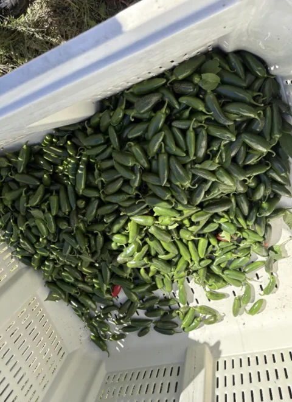
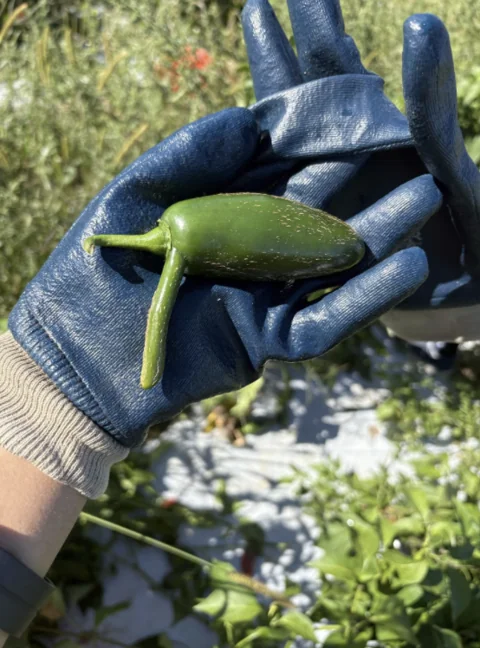

with a helping hand.
Food assistance
A hand in the harvest.
A place at the table.
5,000+
meals helped prepare or create
OSI’s food-related service includes harvesting and volunteering with Gleaners. Every contribution is part of a wider effort to support our community.
Meet Gleaners